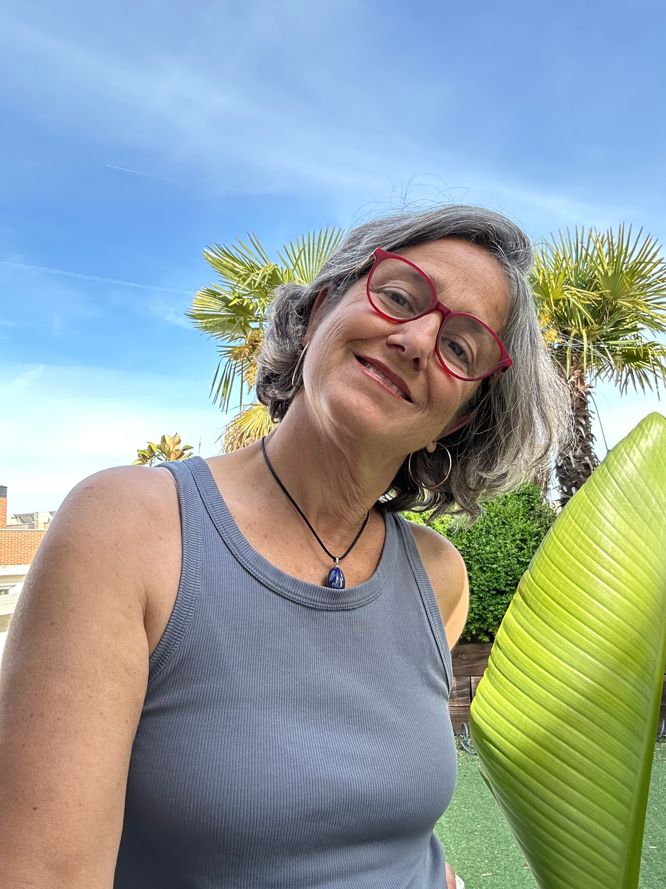

5 prácticas cortas de mindfulness para encontrar calma y presencia — y saborear lo que ya tienes — en los primeros y más intensos momentos de la maternidad.
⚡ Acceso inmediato
¡Listo!
Revisa tu bandeja de entrada — tu Kit de Pausa está en camino.
Cuando nace tu bebé, naces tú también. Es hermoso. Y es tremendamente intenso.
La sociedad te felicita, te pone al bebé en brazos y espera que seas una madre perfecta. Nadie te habla de lo que sientes por dentro. De la marea de emociones. Del cuerpo que no reconoces. Del no saber si lo estás haciendo bien.
Y en medio de todo eso, tú desapareces. Te olvidas de respirar. De parar. De volver a ti.
Sientes que vas en modo automático, sin un momento de calma real para ti.
Tu mente no para: la lista de tareas, las dudas sobre si lo haces bien, el cansancio acumulado.
Te sientes sola en este camino, como si nadie entendiera de verdad lo que vives.
A veces no te reconoces a ti misma. Echas de menos conectar contigo, con quien eras.
El olor de su cabeza. La forma en que te mira como si fueras el mundo entero —porque lo eres. Ese momento en que te das cuenta de que amas de una manera que antes no sabías que existía.
La maternidad no es solo lo que cansa. Es también lo que abre. Lo que ensancha el corazón. Lo que te muestra de qué estás hecha.
"El Kit de Pausa no es para escapar de tu maternidad.
Es para estar más dentro de ella."
"No necesitas tiempo. Necesitas permiso para usarlo."
El Kit de Pausa es una colección de 5 prácticas mindfulness diseñadas para los momentos reales de la maternidad: cuando el bebé duerme, cuando estás en el baño un instante, cuando necesitas volver a ti antes de que todo siga.
Sin perfeccionismo. Sin exigencias. Solo presencia, ternura y verdad.
Meditaciones en audio para los momentos en que leer es imposible.
Preguntas suaves para conectar con lo que sientes de verdad.
Reflexiones breves que abren algo por dentro con solo 2 minutos.
Acceso desde el móvil, en cualquier momento y lugar.
Cada práctica es una puerta pequeña hacia ti misma. No necesitas experiencia previa ni condiciones perfectas.
"No tengo que hacer nada bien. Solo respirar."
Audio guiado para aterrizar en el cuerpo y salir del modo automático en solo tres minutos.
Audio guiado"No necesito condiciones perfectas. Solo mi mano... y mi intención."
Lectura y audio para activar el sistema de calma con un simple gesto de autocompasión.
Lectura + Audio"Todo lo que necesito saber ya está dentro de mí. Solo necesito parar a leerlo."
Journaling consciente para escucharte de verdad y reconocer lo que tu cuerpo y mente te piden.
Journaling"No necesito ir a ningún sitio. Todo está aquí, en este contacto."
Un audio para hacer con tu bebé: convertir un momento cotidiano en una práctica de presencia plena.
Audio con bebé"La belleza no está lejos. Solo necesita que la mire."
Una micro-práctica visual para entrenar la mirada a notar lo pequeño y hermoso que ya existe en tu día.
Micro-práctica
Hola, soy Chon.
Madre de 3 · Instructora de Mindfulness · Guía de Círculos de Maternidad
Ser madre me cambió por dentro de una manera que ningún libro me había anunciado. Y eso — más que ninguna otra cosa — es lo que me trajo hasta aquí.
Soy instructora de mindfulness especializada en maternidad, guía de círculos maternales y educadora prenatal con hipnoparto. Llevo años acompañando a mujeres en el momento más transformador de su vida: desde adentro, sin fórmulas y con mucho amor.
También soy pediatra e IBCLC — no para que esto parezca una consulta, sino porque todo ese camino me ha enseñado a mirar a las madres y a los bebés de una manera que va mucho más allá de lo clínico.
Detrás del Kit de Pausa hay un ecosistema completo de acompañamiento: la Biblioteca MaMi de Maternal Mind, un espacio en crecimiento con prácticas, meditaciones, recursos y acompañamiento para cada momento de tu maternidad.
Empieza aquí. Y descubre lo que hay al otro lado.
Accede ahora a las 5 prácticas. Sin compromisos. Solo tú, unos minutos y un poco de amor propio.